Meeting Presentations and Materials
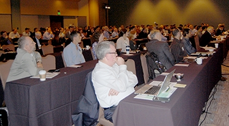About 170 lighting technologists, their counterparts from the semiconductor and IT industries, and others gathered in Santa Clara, CA, June 8–9, 2016, to participate in DOE's second Connected Lighting Systems (CLS) Workshop and continue a crosscutting dialogue about how best to prepare for and take advantage of the imminent collision between LED lighting systems and the Internet of Things (IoT).
CONNECTED LIGHTING FUNDAMENTALS
The workshop was preceded by a morning of background education sessions. The first of these focused on communications fundamentals. Panelist Michal Koenig of Qualcomm gave an overview of the wide variety of wireless technologies that are increasingly being integrated into lighting devices and systems. He differentiated between connectivity technologies—which provide localized connections between assets, sensors, and humans—and interconnect technologies, which connect assets to the cloud. Koenig noted that a new era of connectivity technology use is being driven by the growing availability and use of edge processing, which reduces the need to bring data to the cloud when analytics can be done locally.
Himanshu Mehra of Cisco Systems talked about the emergence of Power over Ethernet (PoE) as an option for indoor connected lighting. He noted that the transition to PoE has been going on for a while, just as PoE has been evolving to accommodate an increasing amount of power and today can handle up to 60W, which is enough to power an indoor lighting fixture. Mehra reviewed the benefits of PoE for lighting, including speed (easier installation, simplified operation), efficiency (low-voltage, DC-based), and scalability, as well as the elimination of DC current conversion, lower maintenance and upkeep costs (because no electrician is needed), and higher occupant controllability. He described a product Cisco recently launched to facilitate smart buildings.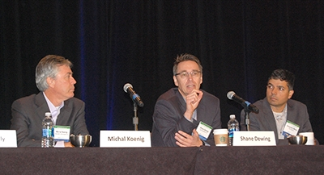
Shane Dewing of Intel focused on the challenges arising as a result of the growing IoT, which is leading to an explosion in the amount of data and number of control points. He noted that in order to realize its promise, IoT technology solutions need to work across varying form factors, operating systems, platforms, manufacturers, service providers, and vertical markets—and also need to scale from smart devices to the cloud. Dewing then discussed how industry consortia are rising up to meet this challenge, focusing on the efforts of the Open Connectivity Foundation (OCF), which grew out of the former Open Interconnect Consortium and is striving to make it easy for developers to deal with the complexity of IoT communications. He explained that the OCF is focused on providing common data models that developers can use to interface with all IoT devices and data. These data models, coupled with a resource model, are intended to deliver as much interoperability as possible in the short term, while providing a path toward future consolidation. Dewing also reviewed the OCF licensing agreement, certification plans, and cybersecurity strategy, and described the important role of the OCF’s sister organization, IoTivity, which develops reference implementations of the OCF specification.
The second pre-workshop session explored cybersecurity fundamentals. Prasad Jogalekar of Ericsson reviewed major cybersecurity challenges in the world today, giving real-life examples. He described the recent evolution of the security paradigm—where compromising systems has gone from a challenge and perhaps a badge of honor, to a business that profits from ransom requests. Prasad then proceeded to discuss the IoT from a cybersecurity perspective, including the risks inherent in bringing so many new devices online quickly, and what the industry could and should be doing now to intelligently manage those risks in a way that balances security and performance, ease-of-use, interoperability, and business impact. Jogalekar noted that IoT penetration in various verticals increases the potential attack surface, and that compromised IoT devices can fall in a traditional firewall’s blind spot. He likened the IoT market at its current stage to the Wi-Fi market in pre-WEP days, and said standardized security built into devices from the ground up (as opposed to strapped on later) will be essential for the wide, successful adoption of IoT devices.
Ken Modeste of Underwriters Laboratories (UL) focused on cyber-assurance needs, what is currently available in the marketplace, and what is missing. At present, he said, there is no single cybersecurity framework that addresses the needs of many. Rather, there are multiple frameworks, written primarily for IT (and not lighting or other IoT) applications, each with its invested constituency, and most broadly written without a clear path to compliance. Modeste suggested that the industry needs a compliance scheme that includes a cybersecurity rating system to manage expectations and addresses not only products and software, but also process. He emphasized that security risks should be managed and assessed according to what are often application-specific objectives. Modeste walked attendees through an example of how one might work through a risk assessment for lighting systems, and concluded with a proposed assurance-level scheme that would leverage a new UL effort focused on product or system cybersecurity testing.
OPENING REMARKS
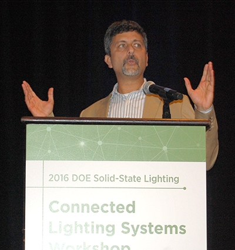DOE SSL Program Manager James Brodrick began the workshop by reiterating its motivation: a belief that enabling intelligent connected lighting devices with data can result in greater lighting energy savings in buildings and cities, and an acknowledgement that the data collected by lighting systems could make possible other features and revenue streams that will accelerate adoption. Brodrick explained that in its role as vendor-neutral facilitator and convener, DOE aims to accelerate the development of connected lighting systems by creating tight information feedback loops to inform manufacturers and developers of needed improvements, and increasing market visibility and transparency on what works—all while promoting collaboration between the various stakeholders.
The workshop’s opening remarks were given by Tanuj Mohan of Enlighted, who noted that the IoT is not new—we’ve had an industrial IoT for decades. At present, Mohan said, large buildings produce a billion times less data than jet engines produce and use to optimize their performance. The opportunity that lies in front of us requires us to first understand how those same jet-engine design approaches and analytics could be used to optimize buildings using environmental, operation, and behavioral data. Mohan reiterated what many in the lighting industry have come to believe but others have thus far been slower to realize: that lighting is an ideal place to install the sensors that comprise the IoT’s “nerves.” He noted that while lighting provides embedded sensors with complete coverage and access to power, sensors can provide lighting with enough intelligence that the efficiency a connected system brings to a building might pay for the entire data collection system. But Mohan warned that the realization of lighting as the IoT data collection platform currently is—and, if the lighting industry does not change its ways, will continue to be—hampered by a profusion of new vendors and standards, varying levels of compatibility and interoperability, and an inability of the lighting industry to handle the pace of change that is emblematic of the IT and computing worlds it is colliding with. He closed with a call for advanced sensors with upgradeable software; security built in rather than bolted on; a wholesale focus on busting existing silos; and a paradigm shift where Intelligent embedded sensor and analytic systems take the place of test beds, mockups, and long, expensive customer and occupant surveys and research.
LEADING-EDGE CONNECTED LIGHTING INSTALLATIONS
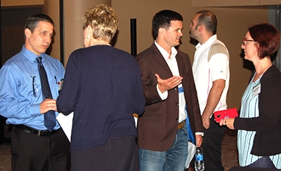The first day of the workshop closed out with two panel sessions focused on what we can learn from innovative connected lighting installations that impact the business case by demonstrating improved lighting performance and other benefits. Cody Crawford, a facilities manager at Vulcan, led off the first panel, which focused on indoor installations. He shared his experiences with a connected lighting system intended to provide human-centric benefits, in which 1,400 incumbent fixtures were replaced with color-tunable LED lighting that can produce white light ranging from 6500K to 2700K CCT, accompanied by 400 occupancy sensors and 100 daylight sensors in 129,000 square feet of occupied office space. Crawford recounted how the new system is currently on target to reduce total energy consumption by 15%, and observed that implementation costs were lower than for any other system considered, with the City of Seattle providing a 10% rebate. He noted that while user satisfaction has been very good thus far, Vulcan is only beginning to explore the potential of the system, and intends to increase its focus on the quality of the work environment and the impact on the end user. “Employees make up 75–80% of your operating costs, so if you increase their productivity even 1%, that goes a long way,” Crawford said.
Facilities manager Kenny Seeton of California State University at Dominguez Hills recounted his early-adopter experience with a connected lighting system, which has been overwhelmingly positive. Among the lessons learned, he said, are how easy it can be to gain control of the HVAC system at a much more granular level than before, and how easy it is to make occupants happy by talking to them in person and being able to set light levels according to their preferences—as opposed to “how the electrician thought they should be,” as one faculty member had put it. Seeton emphasized the importance of involving the IT department from the beginning of the project, and expressed excitement about what he anticipates that the future holds—noting that once a full connected lighting network and sensor platform are installed, he sees the possibilities as being mostly limited by his imagination.
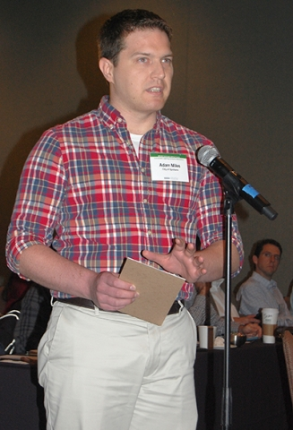George Denise of Oracle led off the second panel, which focused on outdoor installations. He reviewed his company’s dedication to energy efficiency and then dove into Oracle’s recent experience with the installation of connected lighting in one of its buildings as well as in the adjoining parking lot and garage. Denise noted that initially, only four floors of the building were installed with controls, but they were so successful that they were then installed throughout the entire building. The result, he said, was an 81% reduction in lighting electricity use. Denise explained that in the garage and parking lot, a key to the high occupant acceptance of the connected lighting system and implementation of occupancy-based lighting control was the ability to program the lights to ramp up and down slowly, rather than to suddenly turn on and off—resulting in a fluid motion of the lighting as it precedes and follows vehicles, an effect Oracle hopes to extend to the building’s interior as well. The combination of occupancy sensing and daylight harvesting reduced lighting electricity consumption by 89%.
Richard Webster, who manages street lighting for the Suffolk County Council in the United Kingdom, described his county’s five-year experience with connected street lighting. He discussed the path taken and lessons learned along the way that led to the installation of 60,000 control nodes, 47 base stations, and one central management system, which is hosted by the vendor. Webster observed that, to date, there have been less than 0.1% node failures and no significant service or operational issues. Most of the issues experienced, in fact, were due to operational shortcuts made by county staff navigating the learning curve. Webster noted that the system capabilities have already become integral to how his county operates, in a number of ways. Integration with the asset management system has led to the end of night scouting, fewer outage hours, zero day burners, and the ability to exceed key performance indicator (KPI) goals for lighting. Integration with the utility meter administrator, together with a new tariff process, has facilitated the ability to monetize adaptive lighting schemes, including a recently approved part-night policy. A traffic-adaptive pilot project is in the works. Webster concluded by noting that, largely on the basis of his county’s experience, most of the other jurisdictions in his area have either already installed connected street lighting or are actively considering it.
TEST BEDS
Michael Poplawski of Pacific Northwest National Laboratory (PNNL), and Rafael Reyes of Prospect Silicon Valley, examined how test beds can accelerate CLS development, looking at it from a few different perspectives. Reyes discussed how his organization has been 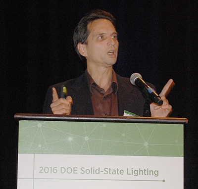supporting technology innovation and adoption in a number of ways—from investor connections, to demonstrations, to pilots—and working towards test beds capable of supporting a variety of recurring project types. He strikingly illustrated the need for test beds that can accelerate the ascending of technology learning curves for manufacturers and building and municipal project planners, by noting that in the time it took San Francisco to build one bridge, the industry saw three generations of battery technology, five generations of automobiles, and 10 generations of mobile devices hit the market. Reyes discussed a number of ways in which technology developers and adopters need to figure out how to share the risks and rewards when navigating any type of learning curve, focusing on the challenges that are unique to cities. He emphasized the need for a structured process that is independent of procurement, defines and limits scope, is structured for learning by third parties, is transparent, has a sustainable funding mechanism, and is clearly seen as relevant to the hosting agency’s ongoing needs and long-term plans.
Poplawski considered the broad question of how to accelerate the development and adoption of connected lighting, offering up some lessons learned thus far in its still-formative phase. He characterized a spectrum of activities commonly embarked upon, if not required, prior to the deployment of new technology—ranging from the vetting or identifying of qualified vendors, to the characterization of technology features or capabilities, to the demonstration of real-world use cases in real-world environments, to the conducting of pilots that are focused on learning what you don’t realize you need to know. Poplawski then described several existing test beds, including PNNL’s Lab Homes, Lawrence Berkeley National Laboratory’s FlexLab, Denmark’s DOLL, and a new DOE Connected Lighting Test Bed—noting where in the aforementioned pre-deployment spectrum each test bed was targeting or effectively operating. He closed with set of questions for the audience, including a call for feedback on what lighting applications could most benefit from a dedicated, cooperative, real-world test bed.
INTEGRATING CONNECTED LIGHTING INTO THE IOT
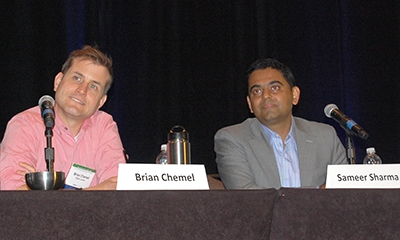Day 2 of the workshop kicked off with a panel on how connected lighting systems should be integrated into the IoT. Panelist Brian Chemel of Digital Lumens observed that lighting is poised to play a pivotal IoT role in buildings, but cautioned that this is far from a done deal, and that industry has much to do in order to make it happen. He warned against making the kinds of mistakes that could undermine lighting’s chances to play a major role in the IoT—such as underestimating one or more industry players, focusing on technical specs instead of on end-user value, and downplaying the importance of interoperability. Nevertheless, Chemel’s overall tone was very optimistic, given SSL’s inherent compatibility with intelligence, sensing, and networking, and the fact that, as he put it, lighting currently is the only IoT platform that actually pays for itself. He noted that for a long time, lighting has been a “bubble,” isolated from other fields, but connected lighting is changing that in a big way.
Sameer Sharma of Intel said we’ve already reached the inflection point where the IoT is economically viable, driven by the falling costs of sensors, bandwidth, and processing. He explained how connected lighting will be enabled by increased demand for smart cities, the advent of 5G technology, and the continued development and adoption of key standards. An imagined future world with 7 trillion high-functioning connected things will require, Sharma said, not one but a multitude of integrated air interfaces, the ability to optimize signaling traffic in real time, sufficient security for managing risks—and, in many cases, device-to-device (rather than device-to-cloud) communication. He shared a forecast that 50 billion devices will be connected by 2020, but emphasized a number of keys needed to unlock the open-platform approach that’s essential to realizing this forecast—including consensus collaboration, public-private partnerships, operational models, and open horizontal test beds. Sharma said the convergence of lighting and the IoT will produce benefits in the areas of health and wellness (e.g., sleep management and the treatment of seasonal disorders), safety and security (e.g., egress lighting), tracking and location services (e.g., in retail stores), and process optimization (e.g., productivity management and resource tracking).
HOW ENERGY REPORTING CAN ACCELERATE DEPLOYMENT
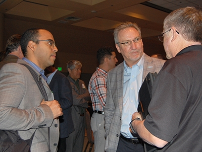John Scott of Colliers International led off a panel focusing on business opportunities enabled by the ability of connected lighting systems to report their own energy consumption, noting that lighting has historically been the most commonly discussed, understood, and utilized tool for energy efficiency, and also one of the most stress-free and cost-effective to implement, due to a typically short payback period. He observed that lighting technology is emerging at an accelerating rate, and cautioned that standards and codes must follow process. Codes that lag technology can be difficult to interpret and apply, potentially hindering the deployment of higher-performing system technologies—such as connected lighting. Scott recounted how some lighting efficiency projects in the past were compromised due to lack of performance measurement, and described how lighting systems that report their own energy usage make better business sense because they reduce risk, hassle, and project costs.
Russ Abber of EmilyGrene discussed the myriad challenges commonly faced when trying to get customers to deploy technology that is newer, has higher upfront cost, and/or offers less-certain energy savings than other options that are more proven but likely are lower-performing. He echoed Scott’s sentiments that most customers are very risk-averse, fear that promised savings from lighting retrofits won’t materialize, and wait for code requirements to push higher-performing product specifications. Abber explained that risk reduction is critical to the buying decision, but lamented that historical means for predicting or verifying energy savings suffered significant uncertainties. Comparing electric bills before and after lighting retrofit is a very inexact process, as weather variations, plug-load additions, and/or the unanticipated installation of new equipment can lead to wrong conclusions. Simple lighting loggers are relatively easy to deploy but only capture hours-of-use and rely on assumption about power draw. Like Scott, Abber believes that connected lighting systems that can report their own energy consumption are seen as having reduced risk, and he noted that in his early experiences with them, the willingness to accept higher upfront cost has been rewarded with paybacks similar to those of basic LED retrofits.
Jeff Harris of the Alliance to Save Energy focused on the importance of energy reporting data to future codes and standards. He observed that while lighting-product-level efficiency has made huge advances, with more to come, future gains in some cases may be incremental and more costly. Harris said that ultimately, whole-building efficiency is what matters to most people. He remarked that energy savings achieved by systems of devices working together could be two to 10 times greater than the savings realized by efficient (but otherwise unaware or uncoordinated) devices. Harris said lighting energy reporting can help in the development of codes and standards by verifying actual performance and savings, providing new metrics for delivered lighting services and making possible new business models.
THE IMPORTANCE OF APPLICATION-LEVEL INTEROPERABILITY
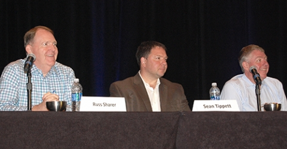Russ Sharer of Fulham led off the third panel of the day, which focused on why application-level interoperability holds the key to broad CLS deployment. He said standards and specifications that do not deliver application-level interoperability often become self-limiting and do not deliver upon their full potential. Sharer noted that interoperability makes things easier to understand, install, and troubleshoot, allowing for more trained installers and making for a faster return on investment and more user choice. Citing Metcalfe’s Law that the value of a network is proportional to the square of the number of users, he stated that the development of interoperable networks may require a greater investment of time and money up front, but as the network and the number of users grow, development and deployment costs become incrementally cheaper. Sharer said that interoperability makes multivendor installations possible, thereby allowing users to choose the products that are best for them.
Sean Tippett of Silver Spring Networks noted that proprietary or closed solutions indicate an immature market. He predicted that as the connected lighting market evolves, we’ll see new device form factors enabled by interoperability. Tippett pointed out that interoperability starts with specifications but doesn’t stop there, and that vendors need to stress-test those specifications through real-world use. He cited lighting as the “killer app” for an IoT that demands interoperability to realize its potential, because it provides an IoT platform that makes economic sense, allowing for the deployment of other IoT applications that by themselves might be difficult to justify financially. Tippett advised customers to specify interoperability requirements in tenders and to be open to partial solutions, and advised vendors to be willing to innovate as well as standardize, build solutions that can evolve over time, and listen to their customers.
Tom Herbst of Cisco Systems reviewed many of the standards bodies and industry consortia that have facilitated the interoperability in computing and mobile networks that we now take for granted—many of which have started to focus on the IoT and connected lighting—and offered thoughts on the strengths and limitations of each. These included the Institute of Electrical and Electronics Engineers, the Internet Engineering Task Force, the Wi-Fi Alliance, the WiSUN Alliance, the ZigBee™ Alliance, the Thread Alliance, the Open Mobile Alliance, the TALQ Consortium, the Fairhair Alliance, and the Open Connectivity Forum. Noting that most of these bodies haven’t historically addressed the application level, he preached patience, observing that historically, everything does not come together immediately, but rather emerges over time as best approaches become evident and build momentum in the marketplace. “It’s okay to innovate,” Herbst said. “Just because we want interoperability doesn’t mean everything we do has to be totally in lockstep with everyone else.”
TECHNOLOGIES THAT CAN REDUCE CONFIGURATION COMPLEXITY
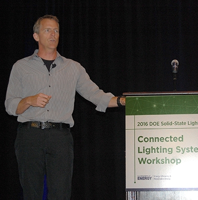Configuration complexity has long been viewed as a barrier to the broad deployment and success of lighting control, and many have observed that connected lighting is going to have to bring technology that reduces that complexity in order to be successful. Panelist Gary Trott of Cree started off his presentation by reminding the audience that “the best technology is the one that actually gets used.” For that reason, he said, it’s critically important that the user experience not be designed by engineers, but rather by those who are attuned to what users want and need. “The technologies don’t matter if you don’t get the user experience right,” he said. Noting that historically, lighting control solutions have been entirely separate from the corporate IT network, Trott stressed the importance of thinking about everyone who will touch the technology, from contractor to end user—and noted the advantage of approaches that are common (e.g., facilitated by interoperability standards and specifications) or borrow from familiar and well-established solutions (e.g., leveraging security know-how from IT systems).
Neil Joseph of Stack Labs talked about how technology that makes spaces responsive effectively reduces configuration complexity by facilitating the ability to adapt to changing conditions. He noted that connectivity should improve the user experience, simplify setup, and increase efficiency—as evidenced by the pervasiveness of computing and mobile-device technologies—but that today’s building controls systems are complex, expensive, and hard to install. Slow improvement, Joseph said, is not good enough; rather, what’s needed to create responsive lighting is an investment in embedded sensors—which, he believes, hold the key to easy (if not auto-) commissioning of entire rooms, zones, and even floors. He stated that manufacturers should work together to develop simple, common ways to embed sensors that can be leveraged by multiple methods of control, and should spend more time investigating other technologies (e.g., the existing infrastructure, visible light communication, machine learning, ultrasonic) that can assist with commissioning.
Charlie Huizenga of Acuity Brands picked up where Joseph left off and talked further about how sensors are key to reducing the configuration complexity of lighting systems. He explained how sensor integration is one of four major paradigm shifts that, in his view, are crucial to the success of connected lighting. Huizenga characterized the first necessary shift—moving from hardware-based control to software-based control—as still somewhat of a new frontier for the lighting industry. Distributed intelligence, he said, brings advantages (lowest latency, most scalable, no single point of failure) that far outweigh the single disadvantage of increased computing cost at the node. Huizenga noted that the integration of sensors and controls (or intelligence) at the fixture ultimately lowers hardware, assembly, design, and installation costs while optimizing performance and increasing reliability. He stressed the importance of sensors that can help a fixture determine its location in space as key to reducing configuration time and cost, and called for more research and development on reducing the cost of sensors and supporting signal-processing techniques. Huizenga called the IoT the fourth paradigm shift, saying that sensors are ultimately at the heart of the IoT and that lighting systems with sensors integrated into each fixture can deliver the rich data that will unlock many IoT use cases.
ARCHITECTING THE IOT TO DELIVER ON ITS POTENTIAL
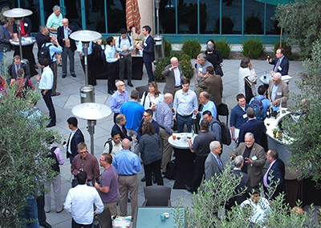The final workshop panel shed some light on IoT architecture proposals from two different industry stakeholders. Panelist Ron Victor of IoTium talked about what he called managed software-defined networks, and illustrated how they work through two use-case scenarios. He drew an effective analogy with Skype, noting that it became immensely popular because it is just software and is so simple that anyone can use it without having to think about whether their hardware technology infrastructure is Mac or PC, Wi-Fi or Ethernet, etc. Victor said that’s exactly what’s needed for lighting and IoT systems, and it can be done today. He said the hardware interface doesn’t matter, as long as the data can be extracted.
Keith Day of Telensa explained why he believes economics currently dictate IoT technology decisions, focusing on connected streetlights as an example. He observed that in order to economically deploy connected streetlights today, the network needs to be low-bandwidth, low-duty-cycle, or both; to be medium to high latency; to be in an unlicensed spectrum; and to employ a long-range star or short-range mesh topology. This, in turn, dictates the types of IoT applications that can best be supported by such lighting networks, which Day suggested could range from indicating parking occupancy and traffic patterns, to monitoring air quality and noise levels. On the other hand, he offered that—at least today—other IoT networks will likely have to support video surveillance, parking cameras, traffic controls, and municipal Wi-Fi.
DOE will digest feedback from the workshop and begin planning the next one, which will take place in 2017. Inputs from these workshops guide DOE program planning. Keep an eye out for updates to DOE’s Connected Lighting website, including vignettes highlighting leading-edge installations, and the results of energy metering accuracy studies.